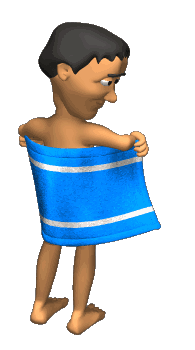
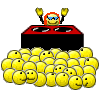

Välkommen till Bennys Bitches hemsida!
Välkommen till Bennys Bitches hemsida! 


Bennys Bitches vann Novischen 2015!!!
Efter mycket kämpande och flera mellan fester så vann Bennys Bitches Novischen 2015!event länk!
Bennys Bitches säljer handdukar till folket!
Hör av er till någon av våra Bitches om du är intresserad av att köpa en handduk eller kontakta oss via mail!

Bennyfy your site!
Få den ultimata Benny experience när du är ute och surfar men hjälp av Bennys Bitches chrome extensionOm Oss! 
Året var 1993, under en stormig natt så skapade gudarna ett barn vars framtid skulle innebära en hel del bitches. I flera år låg hans krafter vilandes till en dag då det var dags för Kvastkamp 2015 och han öde skulle uppfyllas. Han blåste i Gethornet av Förintelse och så de första Bitches skapades. De kämpade sig igenom tävlingarna där de vann Lekarna och därmed fick folkets kärlek och tro. Folket kände därefter att de ville vara en del utav denna gemenskap och så skapades Benny's Mini Bitches, det första steget för att bli en fullbordad Bitch.- Vad är huvudmålet med eran förening?
- - Sprida kärlek.
- Vem är Benny?
- - 42.
- Vad kostar medlemskap?
- - En Kram!
- Hur blir man medlem?
- - Man fyller i ansöknings formuläret och hoppas på det bästa.